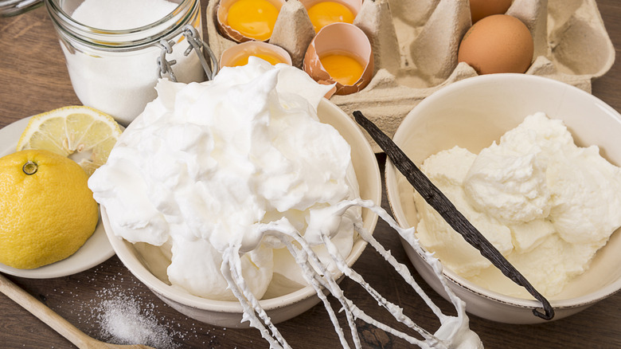
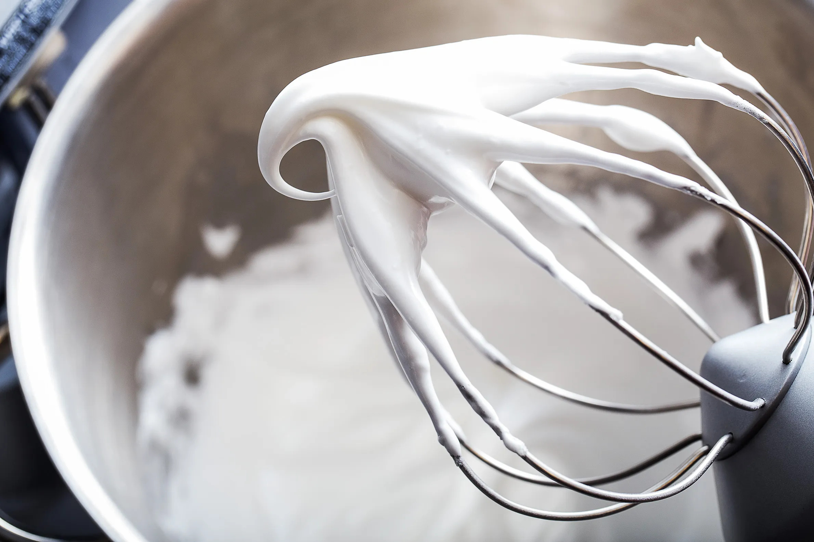
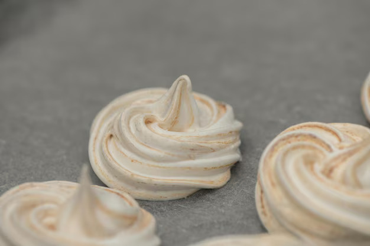
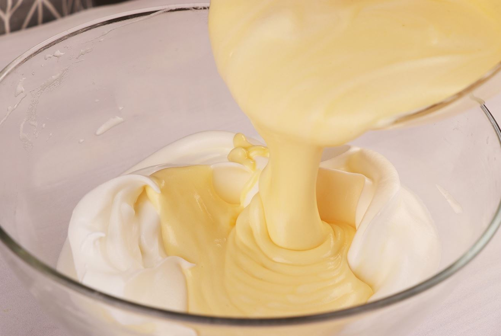
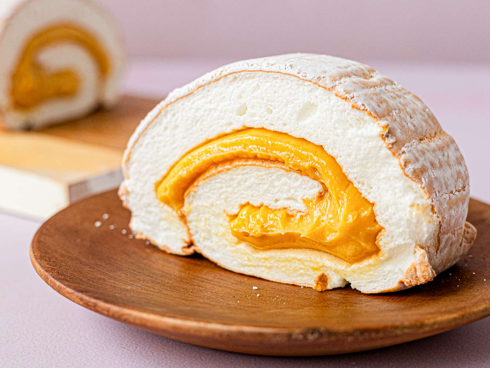

Step 1: Preparing the Meringue Base
Mix egg whites and 1/2 teaspoon of cream of tartar in a bowl. Beat until soft peaks form.
Step 2: Sweetening the Meringue
Gradually add sugar while mixing. Beat until semi-firm texture forms.
Step 3: Prepping for Baking
Preheat oven to 350°F (175°C). Line a baking sheet with wax paper and lightly grease it.
Step 4: Spreading and Baking the Meringue
Spread the meringue evenly on wax paper. Bake for 20-22 minutes until golden brown.
Step 5: Making the Filling
Cook egg yolks and condensed milk until thick. Stir in vanilla extract.
Step 6: Rolling the Cake
Spread the filling over the meringue, roll it carefully, and transfer it to a serving plate.